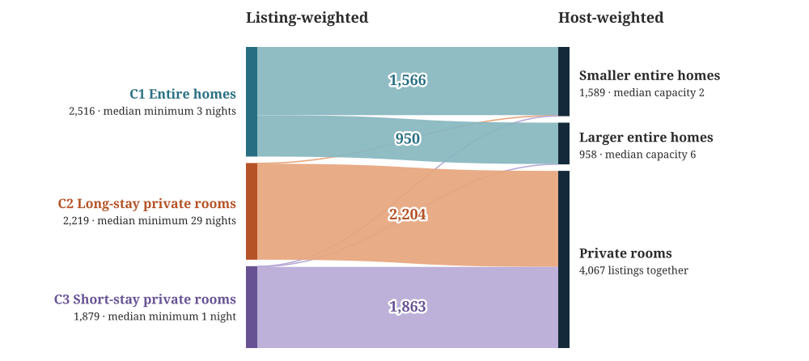

Beyond Room Type
How Listing- and Host-Weighted Clustering Reveal Different Structures in Hong Kong Airbnb
1The Hong Kong University of Science and Technology (Guangzhou)
AIAA 3111
Data Mining
Group 3
Results
1. Weighting Changes the Clustering Structure
On the same September features, the two k = 3 fits are related but not the same partition (ARI = 0.464). Listing-weighted clustering separates entire homes (C1, 2,516 listings, median minimum 3 nights) from long-stay private rooms (C2, 2,219, median minimum 29 nights) and short-stay private rooms (C3, 1,879, median minimum 1 night). Host-weighted clustering instead separates smaller entire homes (1,589 listings, median capacity 2), larger entire homes (958, median capacity 6), and private rooms kept together (4,067).
Listing weighting subdivides private rooms by minimum-stay requirements, whereas host weighting subdivides entire homes by accommodation capacity.

2. Minimum-Stay Rules and Host Concentration
C2 is 2,219/6,614 listings, so it carries 33.6% of listing weight, but only 9.4% of host-account weight. Ten accounts supply 1,681 of the 2,219 C2 listings (76%). That account share is not the 30.5% snapshot-wide figure above. Removing minimum nights places 3,992 of 4,003 private-room listings in one cluster.
Table 1. Listing-weighted private-room profiles, September 2026.
| Feature | C2 Long-stay private rooms | C3 Short-stay private rooms |
|---|---|---|
| Median minimum nights | 29 | 1 |
| Median accommodates | 1 | 2 |
| Kitchen availability | 82% | 26% |
| Median listed price | HK$177 | HK$550 |
Price medians use priced private-room listings only: 1,885 of 2,197 in C2 and 1,644 of 1,806 in C3. Price was not a clustering feature. The contrast describes the fit. It is not a claim about what causes demand.
3. Temporal Robustness Across Four Snapshots
The same comparison, repeated on four Inside Airbnb snapshots, does not give the September pattern every time. Listing weighting subdivides private rooms, and host weighting subdivides entire homes, in December 2025, June 2026, and September 2026.
Table 2. Which part of the supply each weighting subdivides.
| Snapshot | Listings in the snapshot | Listing-weighted subdivision | Host-weighted subdivision |
|---|---|---|---|
| Dec 2025 | 6,630 | Private rooms | Entire homes |
| Mar 2026 | 882 private rooms | Entire homes | Entire homes |
| Jun 2026 | 6,734 | Private rooms | Entire homes |
| Sep 2026 | 6,614 | Private rooms | Entire homes |
March 2026 is the exception: both schemes subdivide entire homes. Among its 882 private-room listings, the longest minimum stay is 7 nights. That is a characteristic of the snapshot associated with the exception, not a demonstrated cause.
4. Stay-Length Eligibility and the Shortlist
One reading of C2 is a search filter: one guest, private room, kitchen, nightly price at most HK$250, and a requested stay of 29 nights (minimum nights at most 29 and maximum nights at least 29). In September, Wan Chai has the most matching listings (256). Yau Tsim Mong has the most distinct host accounts (15).
Table 3. Eligible listings and accounts at HK$250.
| Snapshot | Nights | Listings | Accounts |
|---|---|---|---|
| June 2026 | 28 | 76 | 25 |
| June 2026 | 29 | 821 | 33 |
| September 2026 | 28 | 79 | 31 |
| September 2026 | 29 | 799 | 39 |
Matching listings rise by 745 in June and 720 in September. Distinct eligible accounts rise by only eight in each snapshot. Nine accounts supply the newly eligible listings. These are changes in who passes the filter, not new market supply. A similar listing jump, with a small account increase, appears at HK$200 and HK$300.
5. Calendar-Based Availability
The same 2,496 private-room listings are checked for 1–30 October 2026, for one guest. The count that meets the observed calendar and minimum-stay constraints changes with median lead time.
Table 4. Calendar-eligible listings by median lead time.
| Median lead time | Calendar-eligible listings |
|---|---|
| 275 days | 1,341 |
| 95 days | 1,402 |
| 6 days | 1,009 |
Calendar-based eligibility is an approximation based on observed calendar and minimum-stay constraints. Price and amenities are not restricted. The counts are not confirmed or real-time bookings.